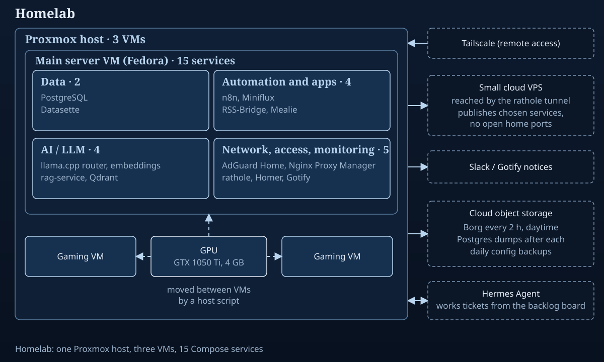

Homelab: a small server setup run like a small IT shop
Spencer Brimley · Proxmox, Docker Compose, Borg, Tailscale, Gotify, Slack · since 2022
At a glance
- What it is: one Proxmox host with three VMs. The main VM runs 15 services with Docker Compose.
- The standard I hold it to: it has to survive a bad disk and tell me when something breaks.
- Backups: Borg to cloud object storage every 2 hours in the daytime, a PostgreSQL dump after each, and daily config backups.
- Tested: on 2026-11-16 I rebuilt the main VM from the cloud copies alone in 3 hours 10 minutes. 13 of 15 services came back.
- Status: running now. No public repository; the configs hold secrets.

The problem
I wanted to run my own services at home and treat them like something a company depends on. That means they have to survive a bad disk and tell me when something breaks. I was a general manager and ran IT for a small distributor, so those were already the questions I asked about every system there.
What I built
One Proxmox host runs three VMs: the main Fedora server VM and two gaming VMs. The main VM runs 15 containers with Docker Compose, in four groups.
| Area | Count | What they do |
|---|---|---|
| Data | 2 | PostgreSQL 15, one shared server for several apps; Datasette for read-only browsing of SQLite datasets |
| Automation and apps | 4 | n8n (the same tool as the ERP), Miniflux, RSS-Bridge, Mealie |
| AI | 4 | A llama.cpp router that serves several local models on one 4 GB GPU; an embedding server; rag-service; Qdrant |
| Network, access, monitoring | 5 | AdGuard Home, Nginx Proxy Manager, rathole, Homer, Gotify |
Remote access is Tailscale. Nginx Proxy Manager handles the reverse proxy and TLS for the local services. For the few services I want reachable from outside, rathole publishes them through a small cloud server, so no port is open on my home network.
rag-service is hybrid search (dense vectors plus BM25) over my notes, scripts and docs. AI agents reach it through an MCP API, and Qdrant stores the vectors.
Each project keeps its documentation as a knowledge bundle in a kb folder, written so I
can follow it later. Open work is not kept there. It goes on a backlog board.
How it decides
Who holds the GPU. There is one GTX 1050 Ti for three VMs, and only one VM can use it at a time. A script on the Proxmox host moves the card between VMs. When it moves, the main VM reconciles its containers at boot. If the card is present, it uses the GPU compose files. If not, it uses the CPU-only files and the GPU containers stay stopped. I ran the full hand-off on 2026-10-26: the main VM shut down cleanly in 111 seconds, the other VM came up with the card, and the boot reconcile finished in 6 minutes 13 seconds with no container stuck restarting.
Who gets told, and how. Gotify sends one-way notices. Slack is for anything that needs me to answer. I keep them apart so a push on my phone means "read this" and a Slack message means "reply to this".
Which tickets an agent may take. The backlog board has six columns: doing, next, blocked, backlog, triage, done. Each card has a Why and a Done when. Each also carries a priority, a risk level (safe, approval, destructive), an effort size and a tier that says who should do it, from me to a small or large AI model. A destructive card means back up first. An approval card means ask me first. An AI agent (Hermes Agent, running as a service with a Slack gateway) reads the board, picks up cards it is allowed to take, moves them with one script so the log stays accurate, and writes down what it did and how it checked it. It may not mark a card verified. That sign-off is mine.
Results
- Scheduled backups. Docker volumes go to Borg every 2 hours from 08:00 to 20:00 UTC and copy to cloud object storage. A PostgreSQL dump runs 5 minutes after each. Three daily jobs run between 09:15 and 09:45 UTC: the notification server, the storage pool and the config files.
- Restore test, 2026-11-12. After adding the config backup (the first run was 9,551 files in 23 seconds), I ran a dry-run extract of the archive (12,636 entries), restored three files and compared them byte for byte with the live copies, and ran a repository check. All three passed.
- Disaster-recovery drill, 2026-11-16. I rebuilt the main VM from nothing but the cloud copies, on an isolated network so the copy could not reach Slack, the tunnel or the LAN, while the real VM kept running. It took 3 hours 10 minutes from a blank cloud image to working services. 13 of the 15 services came back and answered a health check. The tunnel stayed off on purpose, and one service failed because its data was in no backup. Steps were timed: 68 GB downloaded in 18 minutes, 135,000 files extracted in 12 minutes, and all five database dumps restored with no errors.
- Full-disk VM backup. The main VM also gets a Proxmox backup of its whole disk to a second drive. Restoring it to a spare VM took about 30 minutes, with containers up about 10 minutes after that. The scheduled job stopped after its first run, so it is a ticket and I do not call it nightly.
- The board. 201 cards, 106 done as of 2026-11-16.
What I'd change
The drill found four real problems, which is what a drill is for. A backup job's cleanup had been failing for weeks. Two of the cloud copies kept stale data and failed a repository check. The keys that unlock the backups lived only on the machine they protect. A folder with my AI test results was in no backup. Each is a ticket on the board, and I will add dates here as they close. I also have no real monitoring beyond health checks and notices yet. That is on the board too.
The 60-second version
I run a Proxmox host with three VMs and 15 containers on the main one. Backups go to cloud object storage on a schedule, and I rebuilt the main VM from those copies alone in 3 hours 10 minutes. One 4 GB GPU moves between VMs by script, and the main VM switches its containers between GPU and CPU files. Gotify sends notices, and Slack is for things that need a reply. Remote access is Tailscale, and I publish a few services through a tunnel with no open home ports. Work is tracked as tickets on a kanban board, and an AI agent takes the safe ones.
Links
Upstream projects named on this page: Proxmox VE, Docker Compose, BorgBackup, Tailscale, rathole, Nginx Proxy Manager, AdGuard Home, Gotify, n8n, llama.cpp, Qdrant, Hermes Agent, Homer. I have no repository of my own for this yet. The related public work is small-gpu-bench.